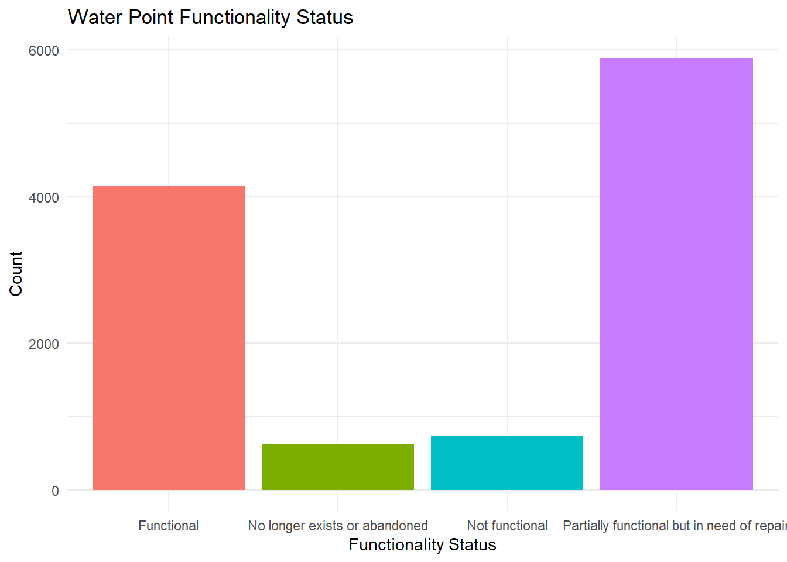
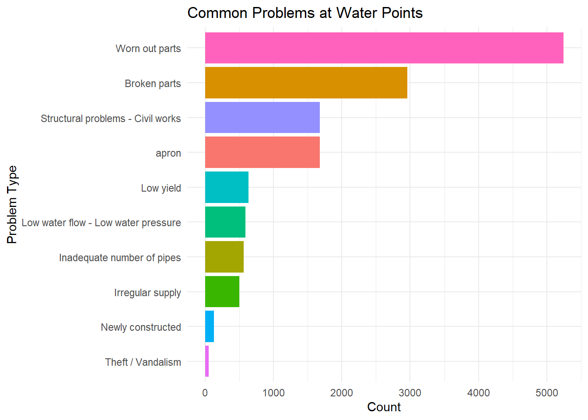

This dataset contains survey records on the functionality and management of rural water points in Malawi. The information was gathered by enumerators using the mWater application with support from BASEflow on 6 April 2022. The primary purpose of this data collection was to assess the operational status of water points, identify technical and water quality problems, evaluate seasonal reliability, and document community management structures in order to inform maintenance planning, strengthen water governance, and improve access to safe and sustainable water supply.
Potential use cases of this dataset include:
Local governments and water authorities To plan maintenance, target investments, and monitor water service delivery.
NGOs and development partners To identify priority interventions, support vulnerable communities, and evaluate the effectiveness of water governance models.
Community water committees and service providers To strengthen accountability, improve routine monitoring, and support timely repairs.
Researchers and academics To study rural water service sustainability, water point performance, and governance dynamics.
Donors and policy makers To track progress toward SDG 6 (clean water and sanitation) and inform evidence-based decision making.
Installation
You can install the development version of waterpointfunctionality from GitHub with:
# install.packages("devtools")
devtools::install_github("openwashdata/waterpointfunctionality")
## Run the following code in console if you don't have the packages
## install.packages(c("dplyr", "knitr", "readr", "stringr", "gt", "kableExtra"))
library(dplyr)
library(knitr)
library(readr)
library(stringr)
library(gt)
library(kableExtra)Alternatively, you can download the individual datasets as a CSV or XLSX file from the table below.
- Click Download CSV. A window opens that displays the CSV in your browser.
- Right-click anywhere inside the window and select “Save Page As…”.
- Save the file in a folder of your choice.
| dataset | CSV | XLSX |
|---|---|---|
| waterpointfunctionality | Download CSV | Download XLSX |
Data
The package provides access to survey records on the functionality and management of rural water points in Malawi. The information was gathered by enumerators using the mWater application with support from BASEflow in 2022.
metadata
The dataset waterpointfunctionality contains 11409 observations and 16 variables
waterpointfunctionality |>
head(3) |>
gt::gt() |>
gt::as_raw_html()| submitted_on | waterpoint_photo | latitude | longitude | functional_status | current_problem | other_current_problem | water_quality_problems_available | available_water_quality_issues | other_water_quality_issues | households_using_waterpoint | water_unavailable_seasonally | water_unavailable_period | service_provider_available | type_of_provider | waterpoint_committee_active |
|---|---|---|---|---|---|---|---|---|---|---|---|---|---|---|---|
For an overview of the variable names, see the following table.
| variable_name | variable_type | description |
|---|---|---|
| NA | NA | NA |
| :————- | :————- | :———– |
Example Visualizations of the data
library(waterpointfunctionality)
# Load necessary libraries
library(ggplot2)
library(dplyr)
library(tidyr)
# 1. Bar chart of functionality status
# Purpose: shows the functionality status of the waterpoints
# Count occurrences of each functionality status
func_count <- waterpointfunctionality %>%
count(functional_status)
# Bar chart
ggplot(func_count, aes(x = functional_status, y = n, fill = functional_status)) +
geom_bar(stat = "identity") +
labs(title = "Water Point Functionality Status",
x = "Functionality Status",
y = "Count") +
theme_minimal() +
theme(legend.position = "none")
# 2. Bar chart of common problems
# Purpose: Shows frequency of common problems with the waterpoints
problems_long <- waterpointfunctionality %>%
separate_rows(current_problem, sep = ",\\s*") %>%
filter(!is.na(current_problem) & current_problem != "NA") %>%
# Remove "Other", "etc", etc.
filter(!tolower(current_problem) %in% c("other", "etc", "other (please specify)"))
# Count frequency of each problem
problem_count <- problems_long %>%
count(current_problem) %>%
arrange(desc(n))
# Plot Bar chart
ggplot(problem_count, aes(x = reorder(current_problem, n), y = n, fill = current_problem)) +
geom_bar(stat = "identity") +
coord_flip() +
labs(title = "Common Problems at Water Points",
x = "Problem Type",
y = "Count") +
theme_minimal() +
theme(legend.position = "none")
License
Data are available as CC-BY.
Citation
Please cite this package using:
citation("waterpointfunctionality")
#> To cite package 'waterpointfunctionality' in publications use:
#>
#> Mhango E (2025). _waterpointfunctionality: Water Point Functionality
#> - Malawi, 2022_. R package version 0.0.0.9000,
#> <https://github.com/openwashdata/waterpointfunctionality>.
#>
#> A BibTeX entry for LaTeX users is
#>
#> @Manual{,
#> title = {waterpointfunctionality: Water Point Functionality - Malawi, 2022},
#> author = {Emmanuel Mhango},
#> year = {2025},
#> note = {R package version 0.0.0.9000},
#> url = {https://github.com/openwashdata/waterpointfunctionality},
#> }